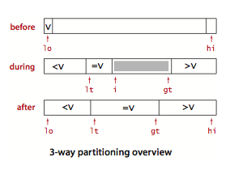
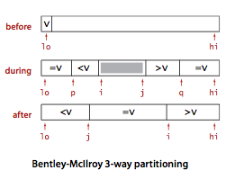

2.3-快速排序Quicksort
对于归并排序，将数组细分，分别排序，之后归并。若找到一个合适的位置将数组分为两部分，将两个数组排序后不用再迭代归并，而是直接完成排序，那排序将会快很多。
- 找到合适的划分位置，将数组分为两部分，分别排序，即完成排序。
- 对于分开的两个数组，再递归划分为两部分；分至1-2个元素的子数组即可进行排序。

QuickSort:选择划分位置，在于将小于某数的值放到数组左边，大于等于的数值放到右边 1. 选择第一个元素作为中位数；取两个指针i, j分别从首尾出发向中间行进 2. i先向后递增，找到第一个小于中位数的值，停止；j从尾部向前递减，找到第一个大于中位数的值；将两者交换（实现将较小的数前置，将较大的值后置） 3. 当i >= j时停止；或i, j走到数组尽头时亦停止 4. 上述全部交换完成后，将中位数放到数组中间，即将lo和j的数值交换 5. 返回中位数的位置j
public class Quick {
public static void sort(Comparable[] a) {
StdRandom.shuffle(a); // Eliminate dependence on input.
sort(a, 0, a.length - 1);
}
private static void sort(Comparable[] a, int lo, int hi) {
if (hi <= lo) {
return;
}
// 为了在子数组较小时更有效地排序，可使用插入排序法，将上边三行代码改为下边的：
// int M = 5; // 当子数组长度为5~15时，改用插入排序
// if (hi <= lo + M) {
// Insertion.sort(a, lo, hi);
// return;
// }
int j = partition(a, lo, hi); // Partition (see page 291).
sort(a, lo, j-1); // Sort left part a[lo .. j-1].
sort(a, j+1, hi); // Sort right part a[j+1 .. hi].
}
}
private static int partition(Comparable[] a, int lo, int hi) {
// Partition into a[lo..i-1], a[i], a[i+1..hi].
int i = lo, j = hi+1; // left and right scan indices
Comparable v = a[lo]; // partitioning item
while (true) {
// Scan right, scan left, check for scan complete, and exchange.
while (less(a[++i], v)) {
if (i == hi) {
break;
}
}
while (less(v, a[--j])) {
if (j == lo){
break;
}
}
if (i >= j) {
break;
}
exch(a, i, j);
}
exch(a, lo, j); // Put v = a[j] into position
return j; // with a[lo..j-1] <= a[j] <= a[j+1..hi].
}
平均比较约2NlnN次，交换1/6NlnN次
快速排序的优化
切换到插入排序
在数组中元素较少时，插入排序更快速，故可在数组元素较少（一般5~15个元素）时改用插入排序来提高效率。
三取样切分
在选择切分元素时，若能合理切分数组（如正好分成两等份），则可以提高排序效率，一种方法是，抽取三个数，选择其位数作为切分元素，则可以较好地选择到一个合适的数字。
private static final int CUTOFF = 8;
private static void sort(double[] a, int lo, int hi) {
// cutoff to insertion sort
int n = hi - lo + 1;
// 元素个数较少时，采用插入排序法
if (n <= CUTOFF) {
insertionSort(a, lo, hi);
return;
}
// 取样三个数，取其中位数
int m = median3(a, lo, lo + n/2, hi);
// 将切分元素放到第首位
exch(a, m, lo);
// 按照快速排序法排序
int j = partition(a, lo, hi);
show(a, lo, j, j, hi);
sort(a, lo, j-1);
sort(a, j+1, hi);
}
private static void insertionSort(double[] a, int lo, int hi) {
for (int i = lo; i <= hi; i++)
for (int j = i; j > lo && less(a[j], a[j-1]); j--)
exch(a, j, j-1);
}
// return the index of the median element among a[i], a[j], and a[k]
private static int median3(double[] a, int i, int j, int k) {
return (less(a[i], a[j]) ?
(less(a[j], a[k]) ? j : less(a[i], a[k]) ? k : i) :
(less(a[k], a[j]) ? j : less(a[k], a[i]) ? k : i));
}
三向切分Quicksort with 3-way partitioning的快速排序
当要排序的数组中存在大量重复元素（如按照性别排序）时，快速排序法退化至O(N^2)。诸如此类数据，又有荷兰国旗问题：荷兰国旗由红白蓝三色横条纹组成；有许多红白蓝条纹需要把这些条纹按照颜色排好，相同颜色在一起，从上到下为红白蓝。
对于此种情况，可以将数组三分，左侧的小于参考值，中间的等于参考值，右侧大于参考值。切分完之后，再将每个子数组进行三向切分快速排序。.

public class Quick3way {
private static void sort(Comparable[] a, int lo, int hi) {
if (hi <= lo) {
return;
}
int lt = lo, gt = hi;
Comparable v = a[lo];
int i = lo + 1;
// i在lt和gt之间
while (i <= gt) {
int cmp = a[i].compareTo(v);
if (cmp < 0) {
// 交换后，lt向右移，i亦自增右移
exch(a, lt++, i++);
} else if (cmp > 0) {
// 交换后，gt向左扩展
exch(a, i, gt--);
// 交换后i不自增而gt左移，再次比较交换后的i和现在的gt
} else {
// 两个元素相等时只移动i
i++;
}
}
// a[lo..lt-1] < v = a[lt..gt] < a[gt+1..hi].
// 切分完之后，再将每个子数组进行三向切分快速排序。
// 若已知数组中只有两2个或3个不同的数据时，下边的几行代码则不需要执行即完成排序
sort(a, lo, lt-1);
sort(a, gt+1, hi);
assert isSorted(a, lo, hi);
}
}
快速三向切分
Fast three-way partitioning用将重复元素放置于子数组两端的方式实现一个信息量最优的排序算法。使用两个索引p, q，使得a[lo..p-1]和a[q+l..hi]的元素都和a[lo]相等。使用另外两个索引i和j，使得a[p..i-1]小于a[lo]，a[j+i..q]大于a[lo] 。在内循环中加入代码，在a[i]和v相当时将其与a[p]交换并将p加1) ，在a[j]和v相等且a[i]和a[j]尚未和v进行比较之前将其与a[q]交换。添加在切分循环结束后将和v相等的元素交换到正确位置。

private static void sort(Comparable[] a, int lo, int hi) {
int n = hi - lo + 1;
// cutoff to insertion sort
if (n <= INSERTION_SORT_CUTOFF) {
insertionSort(a, lo, hi);
return;
}
// use median-of-3 as partitioning element
else if (n <= MEDIAN_OF_3_CUTOFF) {
int m = median3(a, lo, lo + n/2, hi);
exch(a, m, lo);
}
// use Tukey ninther as partitioning element
else {
int eps = n/8;
int mid = lo + n/2;
int m1 = median3(a, lo, lo + eps, lo + eps + eps);
int m2 = median3(a, mid - eps, mid, mid + eps);
int m3 = median3(a, hi - eps - eps, hi - eps, hi);
int ninther = median3(a, m1, m2, m3);
exch(a, ninther, lo);
}
// Bentley-McIlroy 3-way partitioning
int i = lo, j = hi+1;
int p = lo, q = hi+1;
Comparable v = a[lo];
while (true) {
while (less(a[++i], v))
if (i == hi) break;
while (less(v, a[--j]))
if (j == lo) break;
// pointers cross
if (i == j && eq(a[i], v))
exch(a, ++p, i);
if (i >= j) break;
exch(a, i, j);
if (eq(a[i], v)) exch(a, ++p, i);
if (eq(a[j], v)) exch(a, --q, j);
}
i = j + 1;
for (int k = lo; k <= p; k++)
exch(a, k, j--);
for (int k = hi; k >= q; k--)
exch(a, k, i++);
sort(a, lo, j);
sort(a, i, hi);
}
// does v == w ?
private static boolean eq(Comparable v, Comparable w) {
if (v == w) return true; // optimization when reference equal
return v.compareTo(w) == 0;
}
KR快速排序
private static void sort(Comparable[] a, int lo, int hi) {
if (hi <= lo) return;
exch(a, lo, (lo + hi) / 2); // use middle element as partition
int last = lo;
for (int i = lo + 1; i <= hi; i++)
if (less(a[i], a[lo])) exch(a, ++last, i);
exch(a, lo, last);
sort(a, lo, last-1);
sort(a, last+1, hi);
}
Dual pivot quicksort
private static void sort(Comparable[] a, int lo, int hi) {
if (hi <= lo) return;
// make sure a[lo] <= a[hi]
if (less(a[hi], a[lo])) exch(a, lo, hi);
int lt = lo + 1, gt = hi - 1;
int i = lo + 1;
while (i <= gt) {
if (less(a[i], a[lo])) exch(a, lt++, i++);
else if (less(a[hi], a[i])) exch(a, i, gt--);
else i++;
}
exch(a, lo, --lt);
exch(a, hi, ++gt);
// recursively sort three subarrays
sort(a, lo, lt-1);
if (less(a[lt], a[gt])) sort(a, lt+1, gt-1);
sort(a, gt+1, hi);
assert isSorted(a, lo, hi);
}